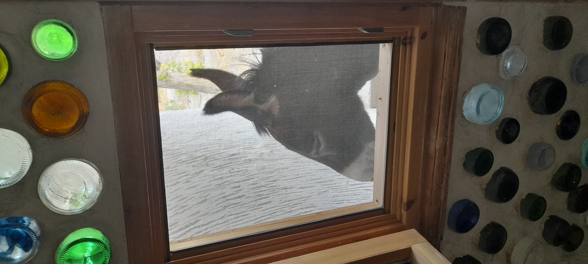
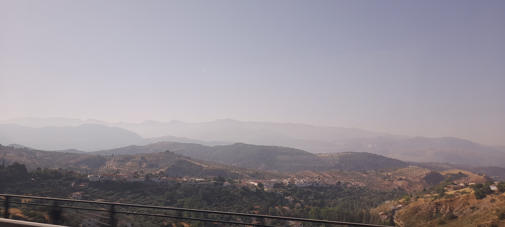
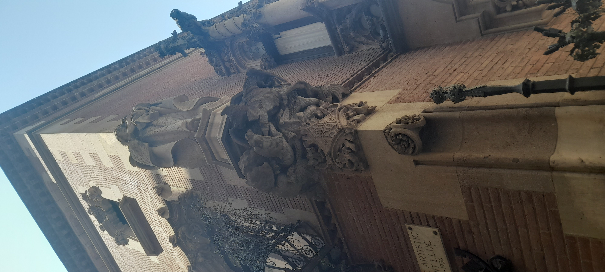
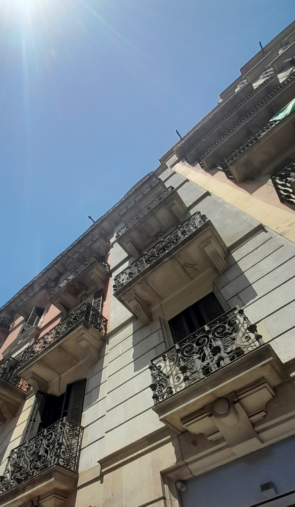
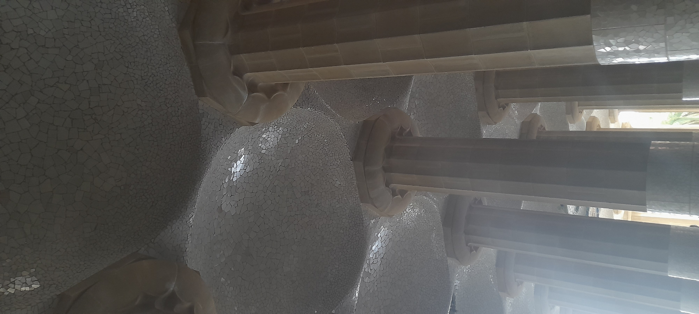

Hola :)
Subscribe to Updates
Augost 16, 2026
Burro in the Window.
She's mad because i didnt have any orange peels for her. Mad and dusty.

August 12, 2026
Near total Solar Eclipse anyone???
From Bacór we had a 95.6% eclipse (should have stayed in Barcelona!) such a cool thing to see. Although, check your lens is up to scratch before, not after the eclipse please, turns out a standard welding glass is not quite there, but its probably fine. anyway here's the shots from jus before and at the peak of the eclipse; now with this interactive slider!
July 30, 2026
South, To Granada!
After a week of €30 a night hostels (not "it") a 15 odd euro option in Granada was welcome, although the drop in price was directly offset by several increased degrees of temperature. My last day in Barcelona came with way too much unprotected sun and I took my one and only day in Granada city relatively easy. The city is quite nice, not a mini Barcelona, but still beautiful and with more affordable food. Plus tapas with a drink, welcome to the land of milk and honey! I had pollo a la brasa con patatas for dinner (I went at 7pm and it was almost too early) there was also a whole street of falafel stores, just like home.
![From the hostel balcony, two slim folding chairs with a round table. A red lantern-style lamp is on the table. The balcony wall is a short, white plaster wall topped with clay roof tiles typical of Spain. In the background is a brick wall covered in vines on the left and a conifer on the right. Further into the background are several small dormer roofs with the same clay, half-round tiles; they are backed by more conifers and the arm of a crane poking out. There are no clouds in the stark blue sky.](elgranada.jpg)
From Granada I caught a bus east, through the Andalusian countryside toward Baza where I arranged to stay with a family living in a traditional cave house. The UV is hitting 10 most days and we can only really do a couple of hours before it gets to 35°C+. So far I've pulled a lot of weeds, fixed a lamp, rehandled a rake and picked up a couple of carretillas de estiércol de burro.

july 26, 2026
Bienvenida a Barcelona
Well, ferry back from naxos was slow and I took a seasickness tablet as well, so it was quite pleasant. we had another night in athens before flying to Barcelona, the capital city of Catalonia, a place full of detailed stone buildings and 4-meter-high timber doors, all routinely washed (in some areas) of the constant urine they receive due to the severe lack of public toilets and bladder control of people living in the city. Over 26% of whom are foreign nationals.

so anyway the city is nice, the subway is affordable and relatively nice. apparently it is quite an active city for pickpockets, but just clutch your handbag close and act like you aren't as lost as all the other tourists.

it seems like every building is built just to take up the time of a stone mason who could have been drinking vermouth or eating some sort of seafood dish instead, but someone had to do it. and someone had to pay for it! (mostly with money made by extorting humans as commodities in colonies, slaves.)

park Güell.. well it was very hot, and there was a lot of opportunities for instagram worthy shots, which was unfortunate as you couldnt really see much of the sculptures for the constant stream of people lined up for a shot with them. this photo contains only columns and tile, a rarity. Also; it contains no temporary fences and no discarded plastic, such a rarity.

July 16, 2026
snack city
a gyros, a beef pie, a leek pie, a ricotta bagel, a Gemista, a cheese pie, and a bunch of coffee. we learnt kalimέra for good morning, and efcharistό for thank you! This morning I woke at 6:30am and walked to the national gardens, a perfect start to the day with many joggers and birds, plenty of birds to see including the Pica pica and the south american Myiopsitta monachus
.jpg)
July 16, 2026
welcome!
Welcome to my online journal! I built this space to keep friends updated and to document my experiences. It is completely ad-free, and respects your privacy. Stay tuned for more updates soon.